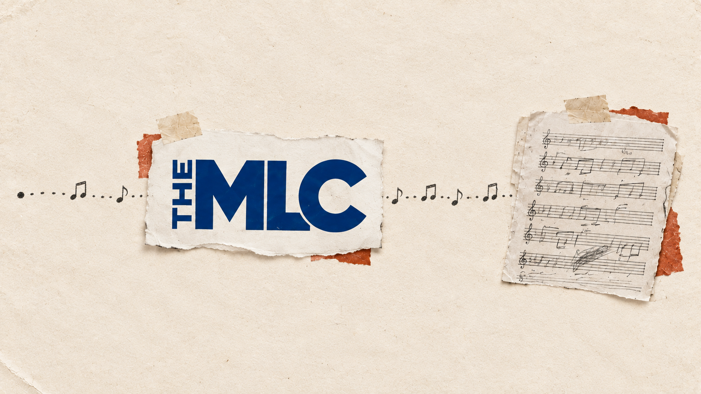

Resources / Publishing
What the MLC Actually Does
One specific piece of the publishing puzzle
By Resistance & Ground

Music publishing gets confusing fast, mostly because the same song can have different rights, different organizations, and different money attached to it. The MLC sits in one very specific part of that mess.
The short version: The Mechanical Licensing Collective administers certain U.S. digital mechanical royalties for musical compositions. That is important. It is also a lot narrower than it sounds.
First: Publishing Is Not Distribution
Your distributor gets your recording onto places like Spotify, Apple Music, and other digital services. The MLC does not distribute music. It works on the publishing side, meaning the rights tied to the underlying song itself: the melody, lyrics, and composition.
The recording and the song are related, but they are not the same thing. One song can have many different recordings, and each recording can have a different owner. We will go deeper into that in Publishing vs. Distribution, because that rabbit hole deserves its own flashlight.
So What Is a Mechanical Royalty?
A mechanical royalty is tied to the reproduction or distribution of a musical composition. The name comes from older technology—piano rolls, records, actual machinery. The machinery changed. The name stayed.
Today, interactive streaming and certain digital downloads can generate mechanical royalties on the composition side. That is where The MLC comes in.
What The MLC Actually Does
The MLC administers the U.S. blanket mechanical license used by eligible digital music services for certain interactive streams and downloads. Those services report usage and send mechanical royalties into the system. The MLC then works to match that usage to the correct songs and rightsholders.
That matching process matters more than it sounds. A recording may be streaming, but somebody still has to connect that recording to the right composition, the right writers, and the right ownership information.
If the data lines up, the applicable royalties can be distributed to the party entitled to collect them. That might be a self-administered songwriter, a publisher, a publishing administrator, or another organization handling those rights. In plain English: The MLC helps connect digital use of a song to the people or companies entitled to the mechanical royalties tied to that song.
What The MLC Does Not Do
The MLC does not collect performance royalties. That is generally the territory of performing rights organizations such as ASCAP, BMI, and SESAC. It does not collect master-recording royalties. If you own the recording, that money moves through other channels.
It does not handle sync licensing for film, television, advertising, games, or other visual media. And registering a song with The MLC is not the same thing as registering your copyright with the U.S. Copyright Office. Different systems. Different jobs.
Do You Need to Register With The MLC?
If you are a self-administered songwriter—meaning you control your own publishing administration and collect your own mechanical royalties—you may need to register your works with The MLC. If you have a publisher or publishing administrator, they may already be doing that for you.
Before opening another account and feeding another database, ask one question: Who is administering my mechanical rights? If the answer is “me,” The MLC matters directly. If the answer is “my publisher” or “my administrator,” check what they are already handling before duplicating anything.
Why Good Catalog Records Matter
The royalty system runs on data. Titles, writer names, ownership percentages, publisher information, ISWCs, ISRCs, and other identifiers help connect a recording to the correct composition.
That does not guarantee every use will match perfectly, and it does not solve ownership disputes. But accurate records make it a lot easier to understand what you own, who administers it, and where it has been registered. Once your catalog gets beyond a handful of songs, memory stops being a filing system.
Key Takeaways
- The MLC works on the composition side, not the master-recording side.
- It administers certain U.S. digital mechanical royalties under the blanket license.
- It does not distribute your music.
- It does not replace your PRO.
- It does not collect master royalties or handle sync licensing.
- MLC registration is not copyright registration.
- If someone else administers your publishing, find out what they already handle before registering works yourself.
Related R&G Resources
The related titles below are not yet published.
Publishing vs. Distribution: Why getting your recording onto streaming services and administering the rights to your song are two different jobs.
PRO vs. MLC: What Each One Handles: Performance royalties and mechanical royalties are not the same thing, even when they come from the same stream.
Writer Share vs. Publisher Share: A plain-English look at who gets what and why those terms are often misunderstood.
Suggested Download
This suggested tracker is not yet available to download.
MLC / PRO Registration Tracker — A simple spreadsheet for tracking whether each song has been registered with the right organizations, who is responsible for the registration, and which identifiers belong to each work. Because “I’m pretty sure I registered that one” is not much of a catalog strategy.
Disclaimer
This resource is for general educational and organizational purposes only. Publishing, royalty administration, licensing, and ownership can vary based on contracts, territories, and individual circumstances. This is not legal, tax, or financial advice.
Sources
The Mechanical Licensing Collective — How It Works
https://www.themlc.com/how-it-works
The Mechanical Licensing Collective — FAQs
https://www.themlc.com/faqs/categories/mlc
The Mechanical Licensing Collective — Membership
https://www.themlc.com/membership
U.S. Copyright Office — Music Modernization Act
https://www.copyright.gov/music-modernization/
U.S. Copyright Office — What Musicians Should Know About Copyright
https://www.copyright.gov/engage/musicians/